ENEN
JPJP


The Hip Hop Hero


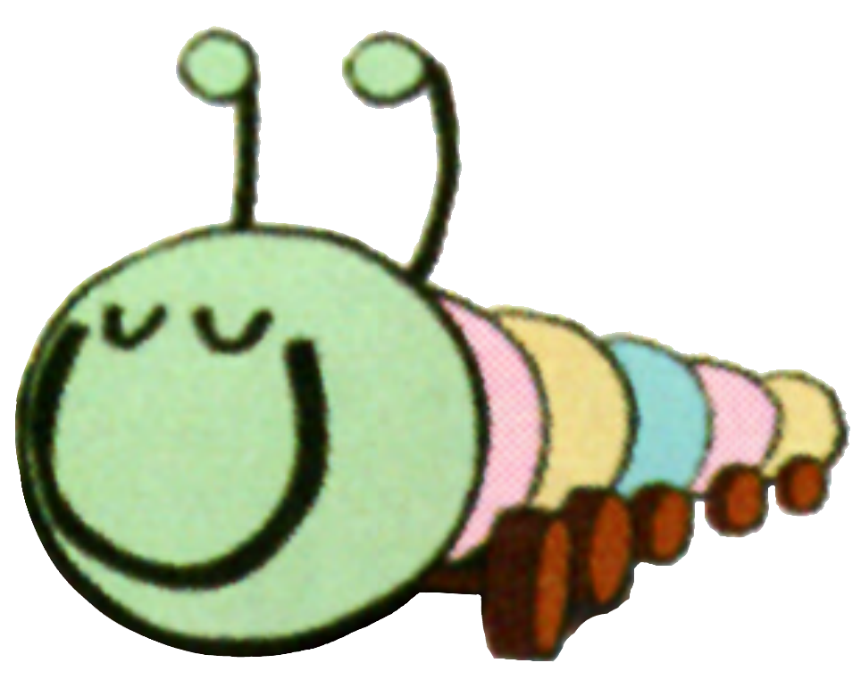


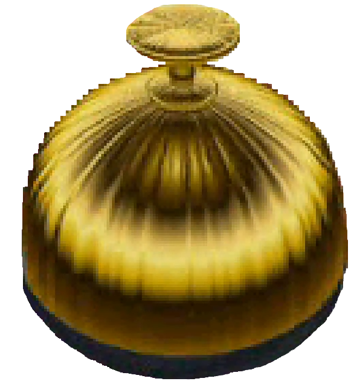


★ PARAPPA — PLUSH TOYS ★★ パラッパ — ぬいぐるみ ★
Plush toys from the original PaRappa the Rapper line, produced by licensees including L-Planning, Takara, Sony Creative Products, Bandai, and Taito. オリジナルパラッパラッパーシリーズのぬいぐるみコレクション。エル・プランニング、タカラ、ソニー・クリエイティブプロダクツ、バンダイ、タイトーなどのライセンシーによって制作されました。
— L-PLANNING —— エル・プランニング —
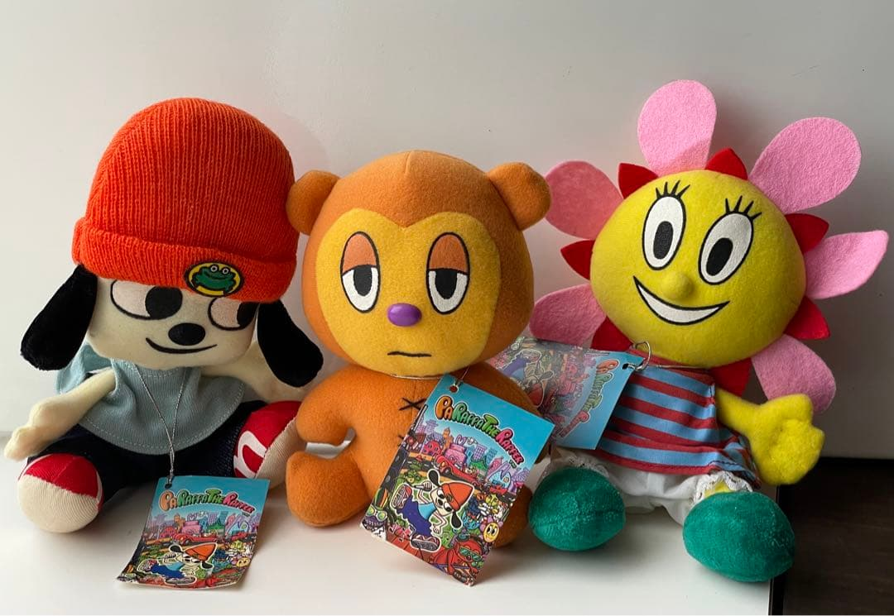

Standing PaRappa Plush (L-Planning) — full-body sitting plush with orange beanie and frog crest, blue tee, denim shorts, and red-and-white sneakers. Shown with the original rainbow PaRappa cast hang-tag.スタンディングパラッパぬいぐるみ（エル・プランニング）— カエルマーク付きオレンジビーニー、青いTシャツ、デニムショートパンツ、赤白のスニーカーを身につけた全身座位ぬいぐるみ。オリジナルの虹色キャラクター集合下げ札付き。
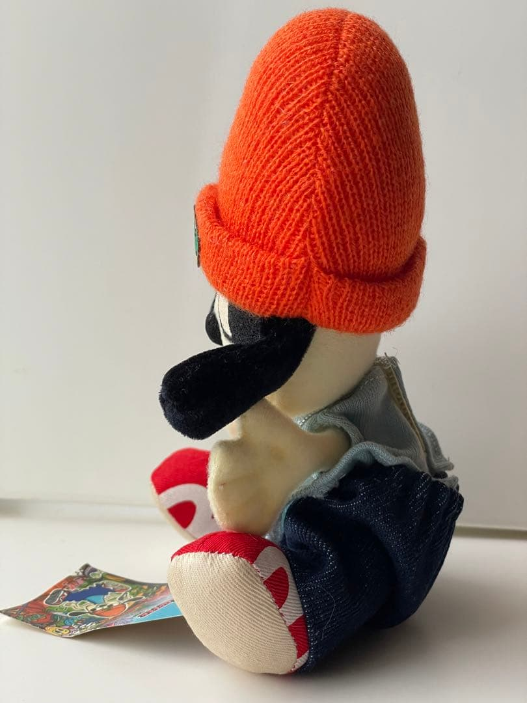


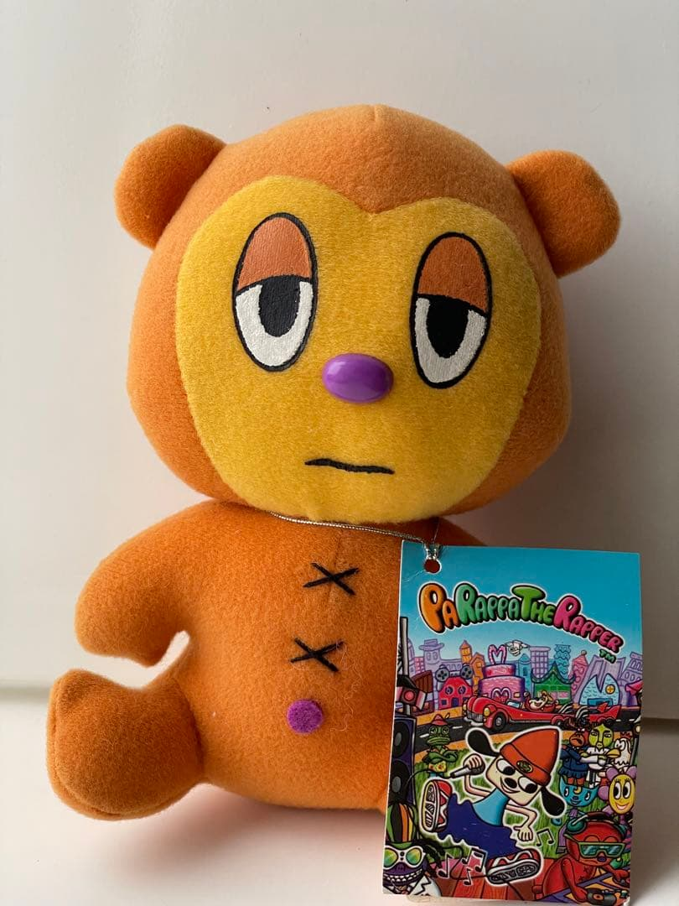
PJ Berri Plush (L-Planning) — orange bear plush with stitched belly cross, sleepy lashed eyes, and purple nose. Shown with the original rainbow PaRappa cast hang-tag attached.PJベリー ぬいぐるみ（エル・プランニング）— お腹のバッテン縫い目、まつ毛付きの眠そうな目、紫の鼻が特徴のオレンジベアぬいぐるみ。オリジナルの虹色キャラクター集合下げ札付き。
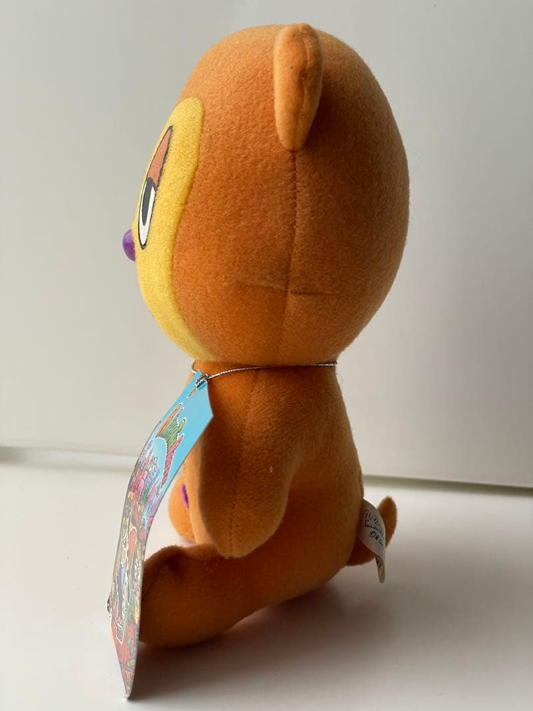


Sunny Funny Plush (L-Planning) — yellow flower-face mascot with pink petal halo, pink-and-blue striped dress, and teal slip-on shoes. Paired with the standard rainbow PaRappa cast hang-tag.サニー・ファニー ぬいぐるみ（エル・プランニング）— ピンクの花びらヘイロー、ピンクとブルーのボーダー柄ワンピース、ティール（青緑）のスリッポンシューズを身につけた黄色い花顔マスコット。シリーズ共通の虹色キャラクター下げ札付き。

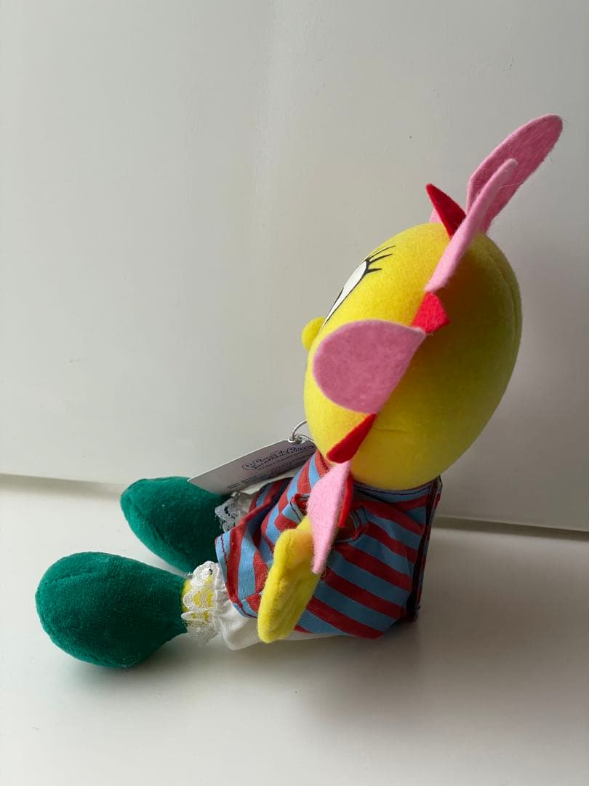
— BANDAI —— バンダイ —
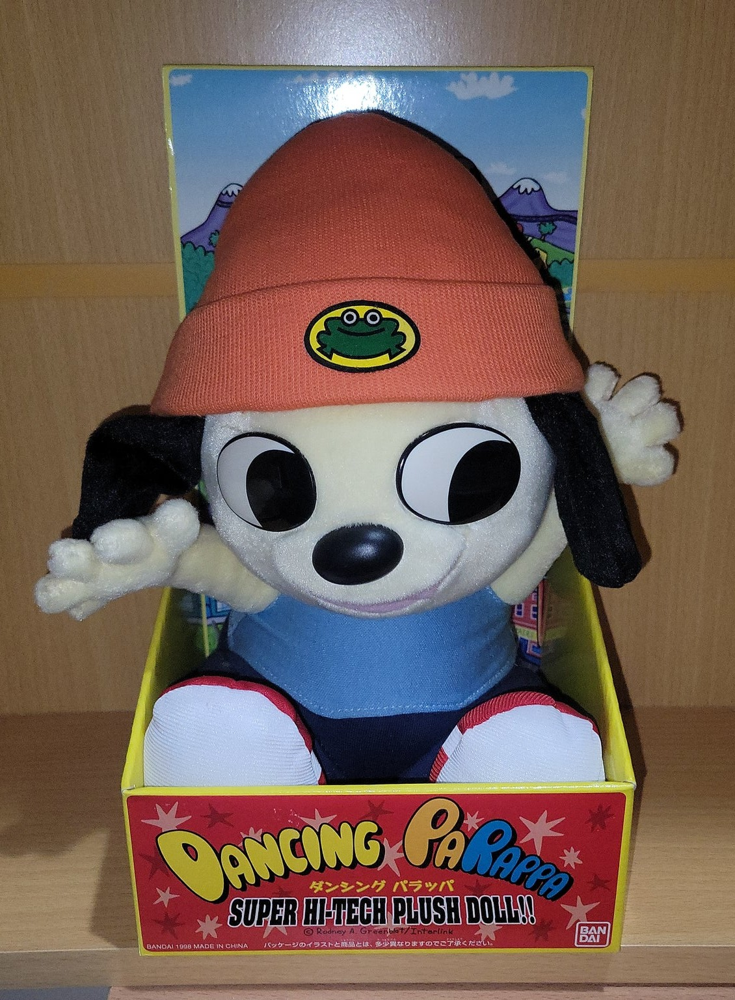
Dancing PaRappa — Super Hi-Tech Plush Doll!! (Bandai, 1998) — Originally stocked in the fall of '98. Stands 7 inches tall. Clap your hands and the dancing doll plays music and raps and grooves to his own beat. Requires two AA batteries. Made by Bandai Japan. MSRP $50.ダンシング パラッパ — スーパーハイテックぬいぐるみ人形!!（バンダイ・1998年）— 1998年秋に発売。高さ約7インチ（約18cm）。手をたたくと音楽が流れ、ラップしながら自分のリズムでノリノリに踊る。単3電池2本使用。バンダイ（日本）製。希望小売価格50ドル。
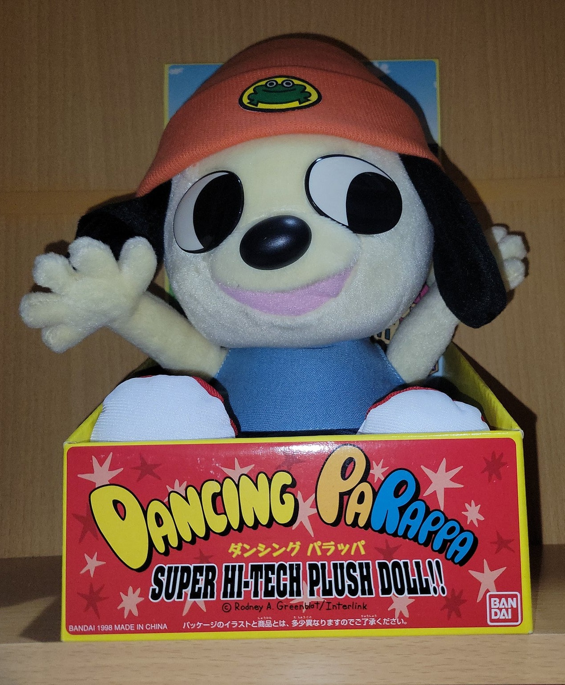
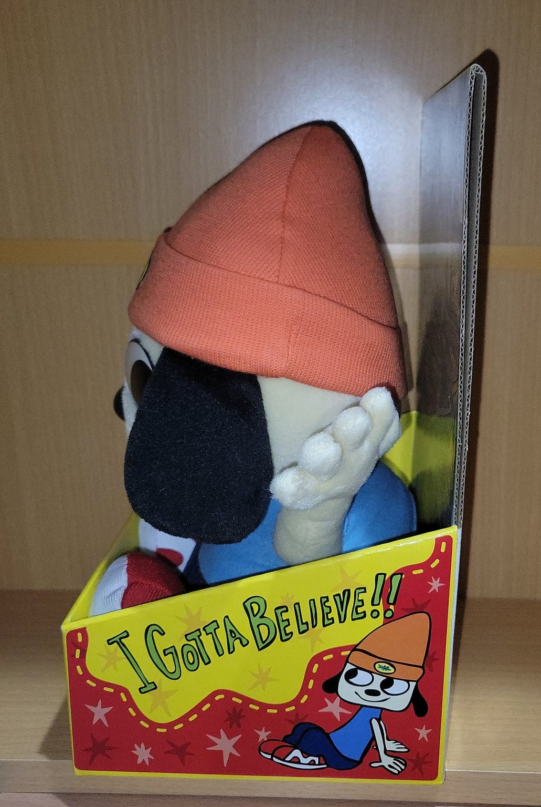
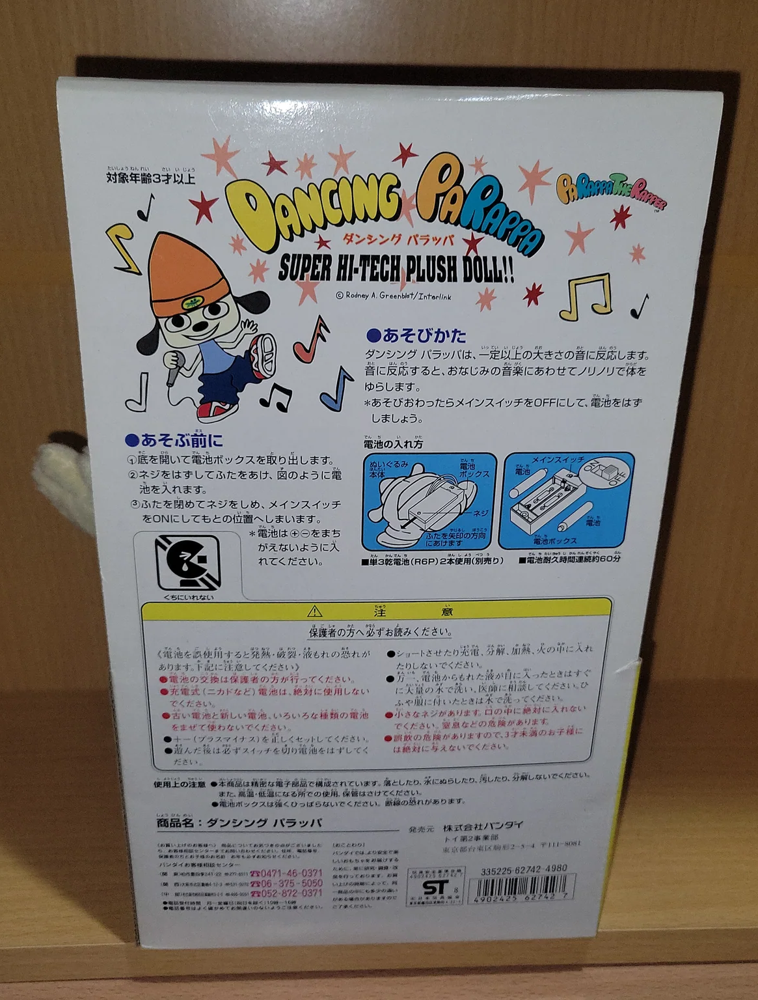
Box Back — instruction panel printed entirely in Japanese, listing 「あそびかた」 (how to play) and 「あそぶまえに」 (before playing) sections for the electronic feature, the battery installation diagram, ST safety mark, and the 株式会社バンダイ (Bandai Co., Ltd.) sales-information block. Confirms the unit is a battery-operated talking/dancing plush for ages 3+.箱の背面 — すべて日本語表記の取扱説明パネル。電子ギミック用の「あそびかた」「あそぶまえに」項目、電池の入れ方の図解、STマーク、そして株式会社バンダイの販売元情報ブロックが印刷されている。3歳以上対象、電池駆動でしゃべる・踊るぬいぐるみであることを示す資料。


— TAKARA —— タカラ —

Takara × SEGA Prize Plush Set — amusement-prize mascot plushes distributed exclusively through SEGA arcade claw machines (marked "アミューズメント専用景品", not for general retail). The set includes PaRappa in smile and scowl variants, Katy Kat, Sunny Funny, and PJ Berri.タカラ × SEGAプライズぬいぐるみセット — SEGA直営ゲームセンターのクレーン景品として流通した「アミューズメント専用景品」（一般販売なし）。笑顔と怒り顔の2種のパラッパ、ケイティ・キャット、サニー・ファニー、PJベリーで構成される。


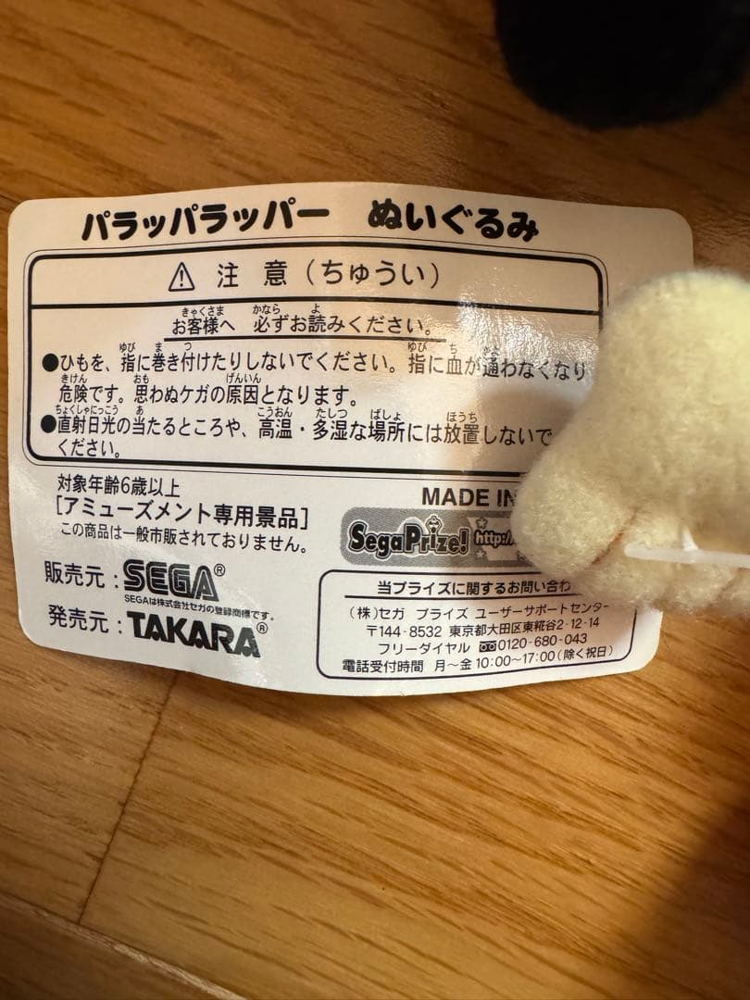
— TAKARA — 2001 ANIME PLUSH SERIES —— タカラ — 2001年 アニメ版 ぬいぐるみシリーズ —

PaRappa The Rapper Anime Plush (2001) — Takara-produced figure of PaRappa in his television-anime outfit: yellow hair, red shirt, dark shorts, no beanie. Matches the redesigned look used across the 30-episode Fuji TV series.パラッパラッパー アニメぬいぐるみ（2001年）— タカラ製。フジテレビ系の全30話アニメ版の新デザイン（金髪・赤シャツ・ダークショーツ、ビーニーなし）を再現したパラッパ人形。

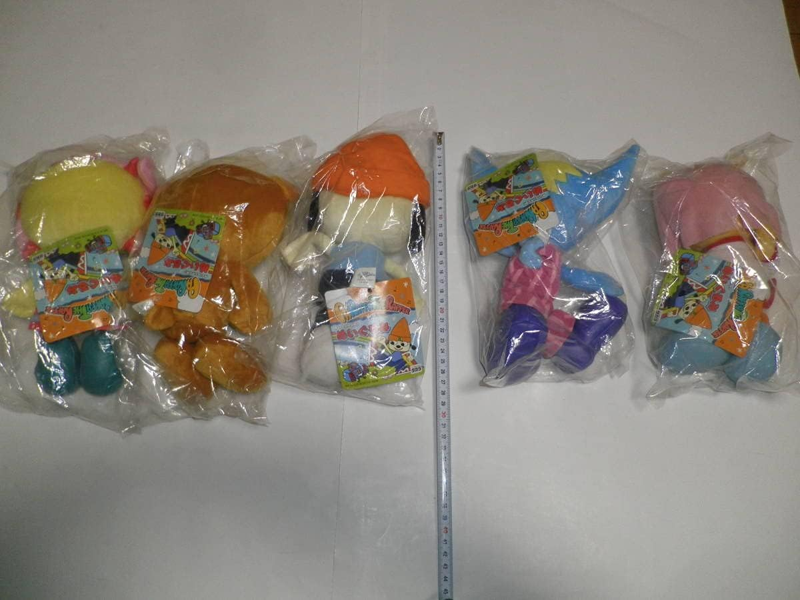
Anime Series — full retail set, factory-bagged. Five characters: Sunny Funny, PJ Berri, anime PaRappa, Katy Kat (UJL), and Lammy (UJL). Each unit ships with the orange "PaRappaTheRapper / ぬいぐるみ" Takara hang-tag.アニメシリーズ — 工場出荷状態の未開封フルセット。サニー・ファニー、PJベリー、アニメ版パラッパ、ケイティ・キャット（UJL）、ラミー（UJL）の5体構成で、各個体にはオレンジ地の「PaRappaTheRapper／ぬいぐるみ」タカラ下げ札が付属する。
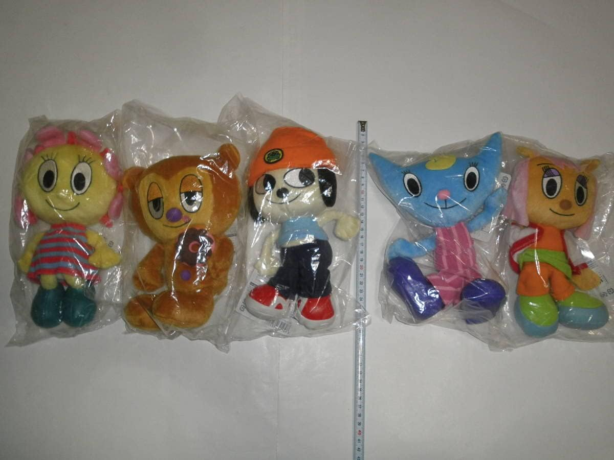

— TAKARA — SOFT TALKING PARAPPA / NAKAYOSHI PARAPPA —— タカラ — ソフトトーキングパラッパ／なかよしパラッパ —
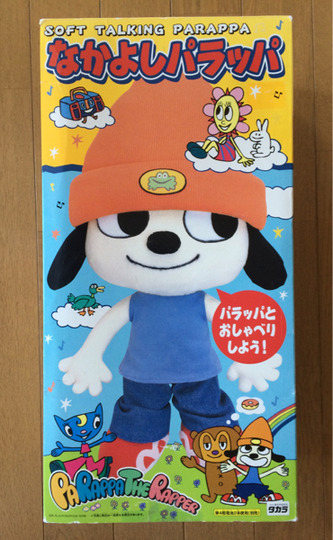
Soft Talking PaRappa "Nakayoshi PaRappa" (Takara) — Takara-issued large electronic talking plush.ソフトトーキングパラッパ「なかよしパラッパ」（タカラ）— タカラ発売の大型電子トーキングぬいぐるみ。
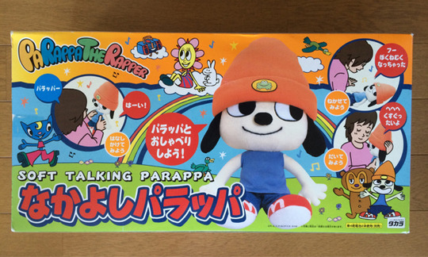
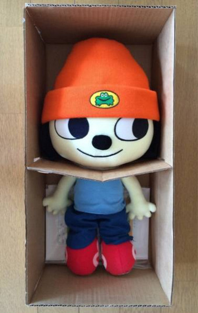
Nakayoshi PaRappa (unboxed)なかよしパラッパ（開封）
— SONY CREATIVE PRODUCTS —— ソニー・クリエイティブプロダクツ —
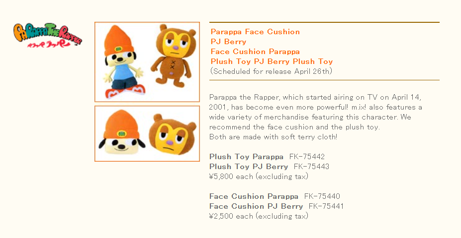
m.ix! Catalog Listing (2001) — Sony Creative Products announcement of the soft terry-cloth Face Cushion PaRappa (FK-75440) and Face Cushion PJ Berry (FK-75441) at ¥2,500 each, alongside the Plush Toy PaRappa (FK-75442) and Plush Toy PJ Berry (FK-75443) at ¥5,800 each (excluding tax), scheduled for release April 26th to tie in with the anime that began airing April 14, 2001.m.ix! カタログ掲載（2001年）— ソニー・クリエイティブプロダクツによる、やわらかいパイル地のフェイスクッション パラッパ（FK-75440）とフェイスクッション PJベリー（FK-75441）（各2,500円・税抜）、ぬいぐるみ パラッパ（FK-75442）とぬいぐるみ PJベリー（FK-75443）（各5,800円・税抜）の告知。2001年4月14日に放送開始したアニメに合わせ、4月26日発売予定とされていました。

PaRappa Face Cushion (FK-75440-3) — large soft embroidered face-shaped plush by Sony Creative Products. ¥2,500 original MSRP, with an "I Gotta Believe!!" hang-tag card and frog-logo beanie embroidery.パラッパ フェイスクッション（FK-75440-3）— ソニー・クリエイティブプロダクツ製の大判刺繍フェイスクッション。定価2,500円。「I Gotta Believe!!」の下げ札カードとビーニーのカエルロゴ刺繍が特徴。

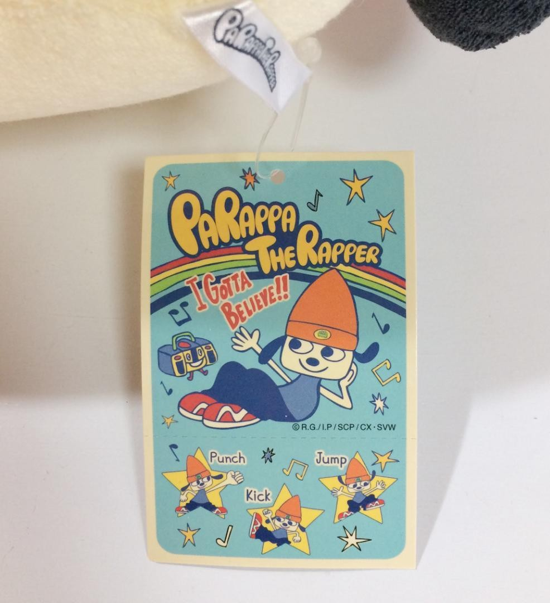


PJ Berri Face Cushion — companion release in the same FK-75440 face-cushion line. Bear-silhouette pillow with PJ's signature sleepy eyes and purple nose rendered entirely in embroidered plush panels.PJベリー フェイスクッション — 同じFK-75440フェイスクッションシリーズの姉妹アイテム。クマシルエットのクッションに、PJ特有の眠そうな目と紫の鼻を刺繍パネルで再現している。

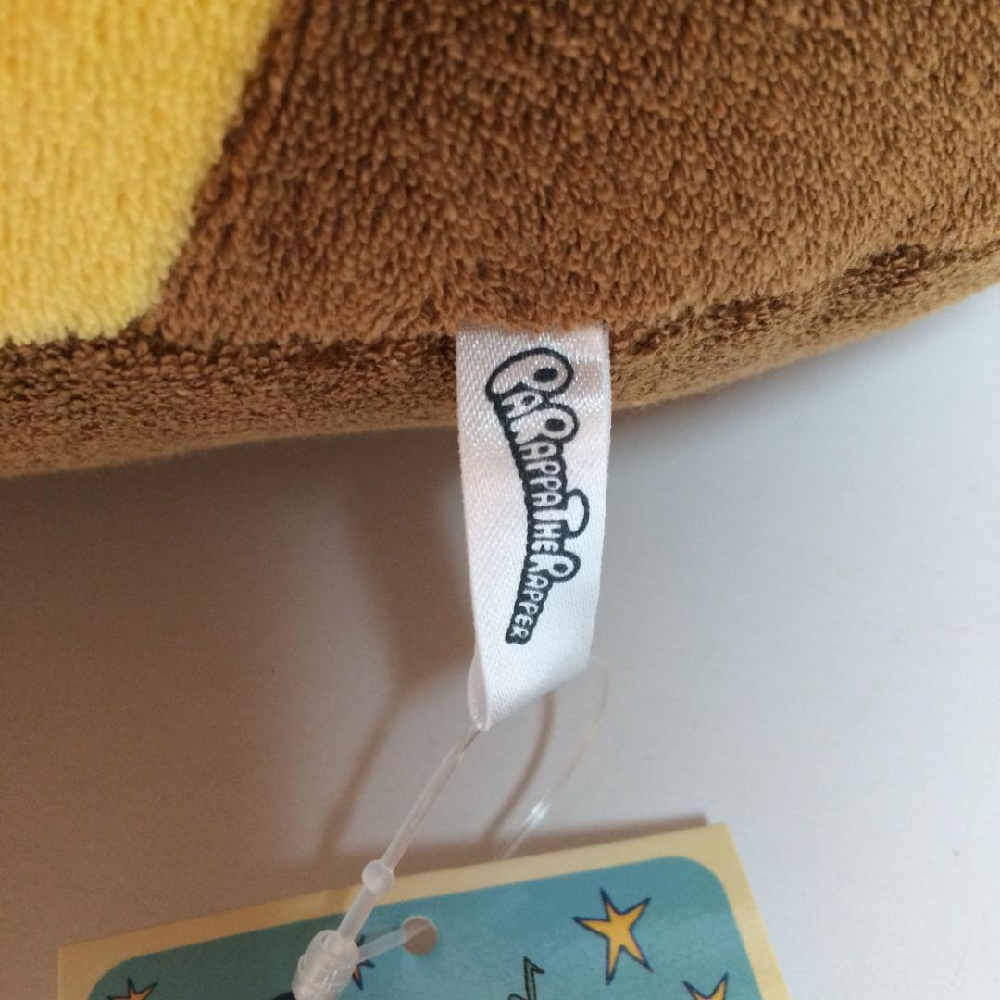
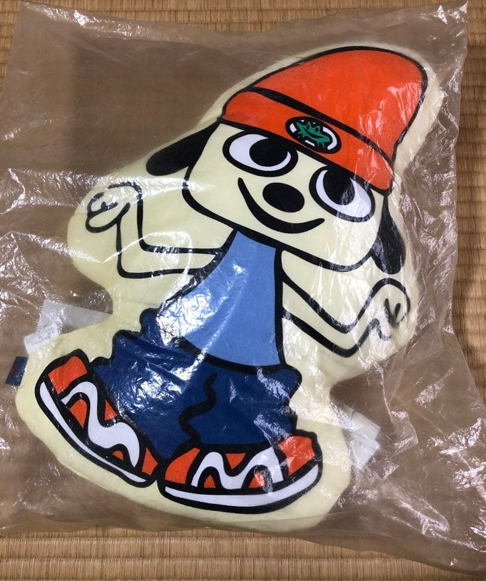
PaRappa Full-Body Cushion (beige) — die-cut throw-pillow plush printed with the classic PaRappa standing pose. Soft flat-style cushion, roughly 40 cm tall.パラッパ全身クッション（ベージュ）— 定番の立ちポーズを大きくプリントしたダイカット型のクッションぬいぐるみ。高さ約40cmのソフトフラットタイプ。

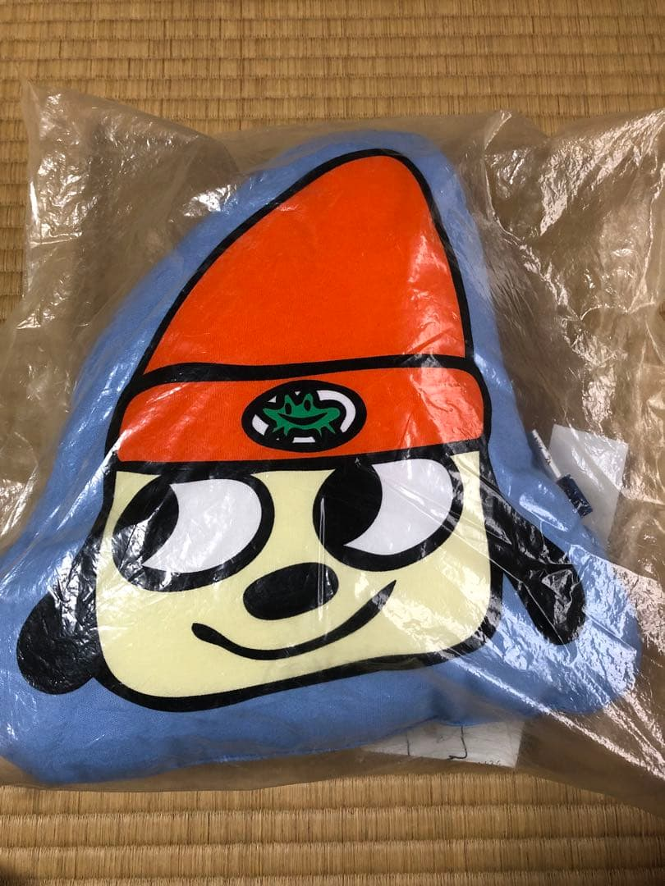
PaRappa Face Cushion (blue) — companion piece to the body cushion, featuring PaRappa's face and beanie printed on a sky-blue pillow.パラッパ顔クッション（ブルー）— 全身クッションと対になる一枚で、水色のクッションにパラッパの顔とビーニーがプリントされている。
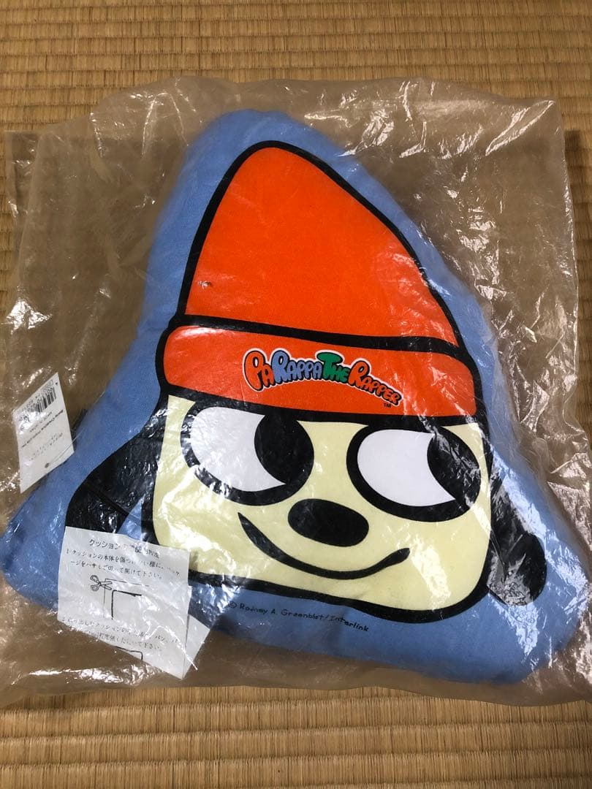
— SONY CREATIVE PRODUCTS PLUSH TOYS (2001) —— ソニー・クリエイティブプロダクツ ぬいぐるみ（2001） —

Standing PaRappa Plush (FK-76368-3) — small SCP-issued standing PaRappa in original-game style: embroidered face, frog-emblem orange beanie, blue tee, navy shorts, and red heart-soled sneakers. Pictured here factory-sealed in its retail bag with the rainbow PaRappa cast hang-tag attached.スタンディングパラッパぬいぐるみ（FK-76368-3）— ソニー・クリエイティブプロダクツ製の原作版小型立ちポーズパラッパ。刺繍の顔、カエルマーク付きオレンジビーニー、ブルーTシャツ、紺ショーツ、赤いハートソールのスニーカーが特徴で、レインボーキャラクター下げ札付きの未開封販売袋に封入された状態で撮影されている。

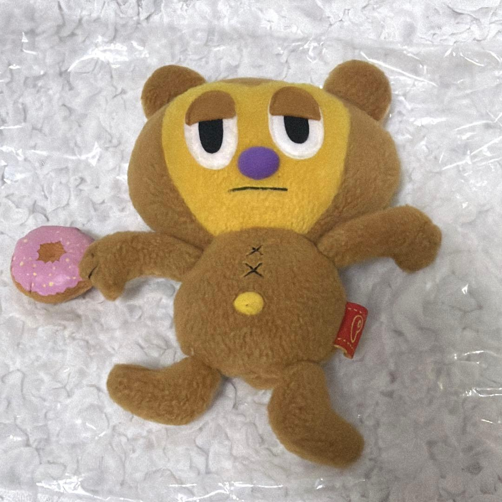
PJ Berri Donut Plush — Sony Creative Products bean-filled PJ Berri in tan fleece with a yellow muzzle plate, purple nose, heavy-lidded embroidered eyes, and the character's signature X-stitch navel. A pink sprinkled donut is sewn into his left paw. Shown factory-sealed in its original bag, with the red SCP tush tag visible at the hip.PJベリー ドーナツぬいぐるみ — ソニー・クリエイティブプロダクツ製のビーズ入りPJベリー。淡いブラウンのフリース地に黄色いマズル、紫の鼻、眠たげな刺繍の目、そしてキャラクター定番のバツ印のおへそが再現されている。左手にはピンクのスプリンクルドーナツが縫い付けられている。未開封の販売袋に入った状態で、腰部に赤いS.C.P.タグが確認できる。
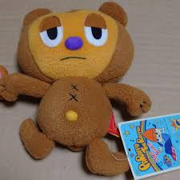
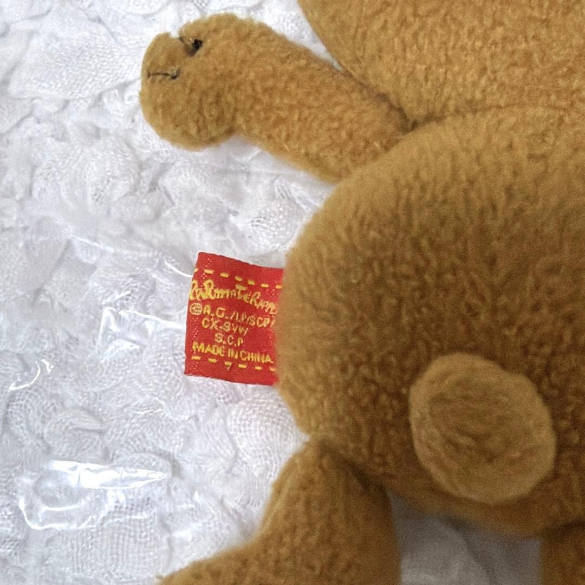
— SONY CREATIVE PRODUCTS — MOBBY PET PARAPPA (FG-77497-3) —— ソニー・クリエイティブプロダクツ — モビィペット パラッパ（FG-77497-3） —

Mobby Pet PaRappa (FG-77497-3) — Sony Creative Products' "Mobby pet" companion-pet figure of PaRappa, packaged in a tall orange window box. The figure clips to a phone strap and runs through interactive talk / sing / sleep modes detailed on the side panels. Released ¥2,980 MSRP, age 12+.モビィペット パラッパ（FG-77497-3）— ソニー・クリエイティブプロダクツの「Mobby pet」シリーズの携帯コンパニオン型パラッパフィギュア。縦型のオレンジ・ウィンドウボックスにパッケージされ、ストラップで携帯に取り付けて、トーク／うた／睡眠モードなどの対話ギミックを切り替えて遊べる仕様（側面パネルに詳細図）。定価2,980円、対象年齢12歳以上。

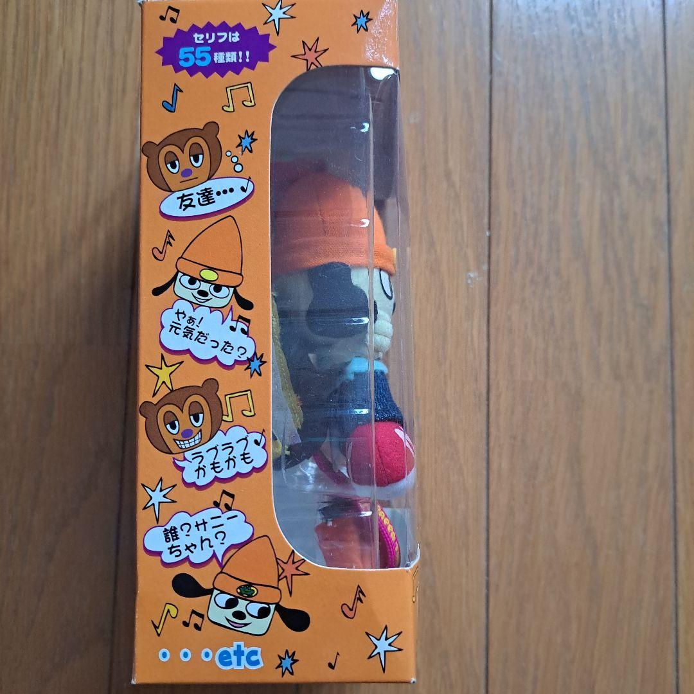

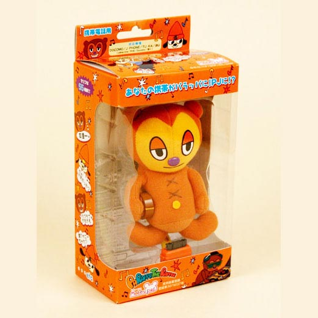
PJ Berri Mobby Pet — It was priced at $35 at Rodney's shop in New York.PJベリー モビィペット— ニューヨークにあるロドニーのショップでの価格は35ドルだった。
— SONY CREATIVE PRODUCTS — SOFT MASCOT BLISTER LINE —— ソニー・クリエイティブプロダクツ — ソフトマスコット ブリスターライン —

SCP Soft Mascot Blister Line — five clamshell-card mascots from Sony Creative Products: PJ Berri and PaRappa "I Gotta Believe!" on the top row, with three Um Jammer Lammy Soft Mascot variants underneath (Lammy, Ma-san, Katy Kat). Each comes on a colour-coded blister card with a small clip strap on the back.SCPソフトマスコット ブリスターライン — ソニー・クリエイティブプロダクツの5体クラムシェルカード入りマスコットセット。上段はPJベリーとパラッパ「I Gotta Believe!」、下段はウンジャマ・ラミー ソフトマスコット3種（ラミー／マーさん／ケイティ・キャット）。各個体ともキャラクター別カラーのブリスターカードに収められ、裏面には小型の取り付けクリップストラップが付属する。
— TAITO —— タイトー —
— NO TAITO LOGO —— タイトーロゴなし —

A Taito prize plush of PaRappa in his blue tee and red sneakers, with a sewn-on microphone and the rainbow cast hang tag.青いTシャツに赤いスニーカー姿で、縫い付けのマイクと虹色のキャラクター下げ札が付いたタイトーのパラッパ プライズぬいぐるみ。
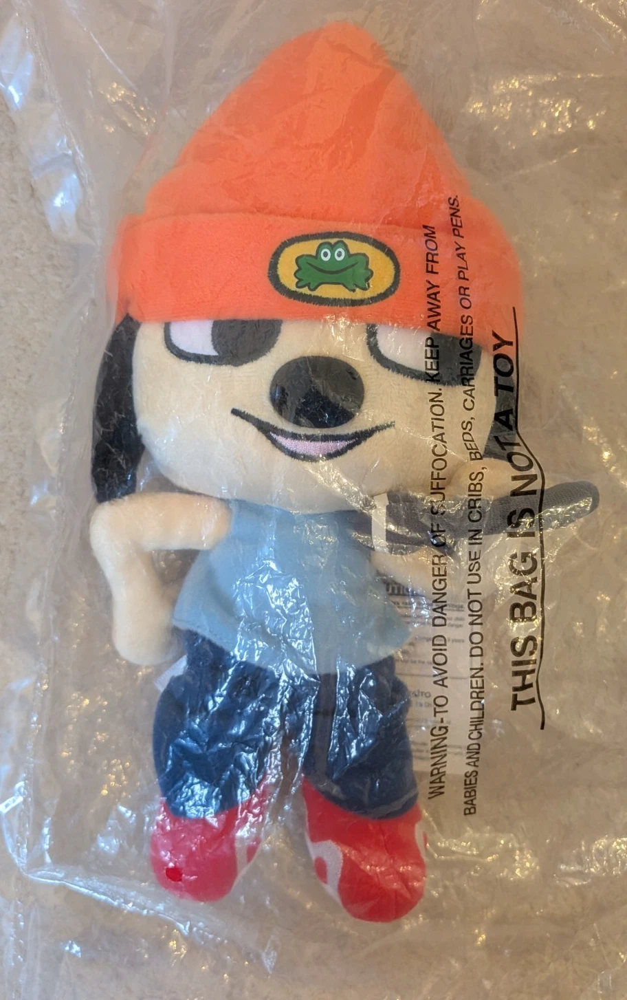
The same PaRappa plush still sealed in its original Taito prize bag.タイトーのオリジナルプライズ袋に未開封のまま入った同じパラッパのぬいぐるみ。
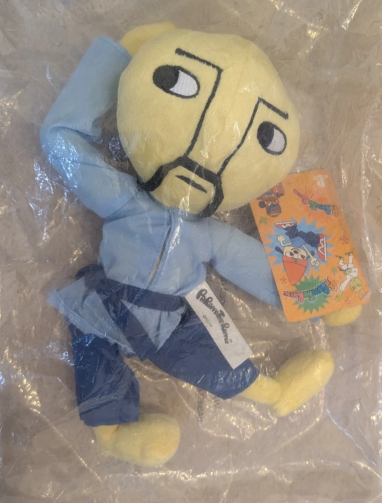
Chop Chop Master Onion, sealed in the original Taito prize bag with the rainbow cast hang tag.タマネギ先生。虹色のキャラクター下げ札付きで、タイトーのオリジナルプライズ袋に未開封のまま入っている。

PJ Berri, sealed in the original Taito prize bag.タイトーのオリジナルプライズ袋に未開封のまま入ったPJベリー。
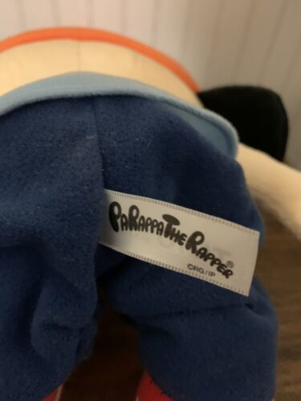
The tush tag shows only the PaRappa The Rapper wordmark and the CRG/IP rights line, with no Taito branding.おしりタグにはPaRappa The RapperのロゴとCRG/IPの権利表記のみで、タイトーの表記はない。
— TAITO LOGO —— タイトーロゴあり —
These are the same plushes as above — the difference is on the tag, which carries the pink TAITO logo. Most likely sourced from Japan.上記と同じぬいぐるみですが、タグにピンクのTAITOロゴが入っている点が異なります。日本から流通した個体と思われます。


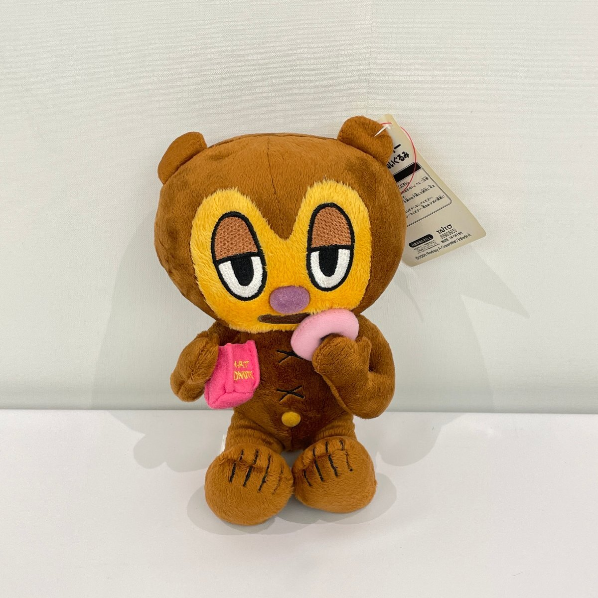
PJ Berri (Taito) — the same PJ Berri plush as the unmarked wave, shown loose with its hang tag still attached. The tag's lower block carries the TAITO mark, PRIZE ONLY, MADE IN CHINA, and the ©2006 Rodney A. Greenblat / Interlink line.PJベリー（タイトー）— 無表記ロットと同一のPJベリーぬいぐるみだが、下げ札が付いた状態の個体。タグ下部にはTAITO表記、PRIZE ONLY（景品専用）、MADE IN CHINA、および ©2006 Rodney A. Greenblat／Interlink のクレジットが入る。
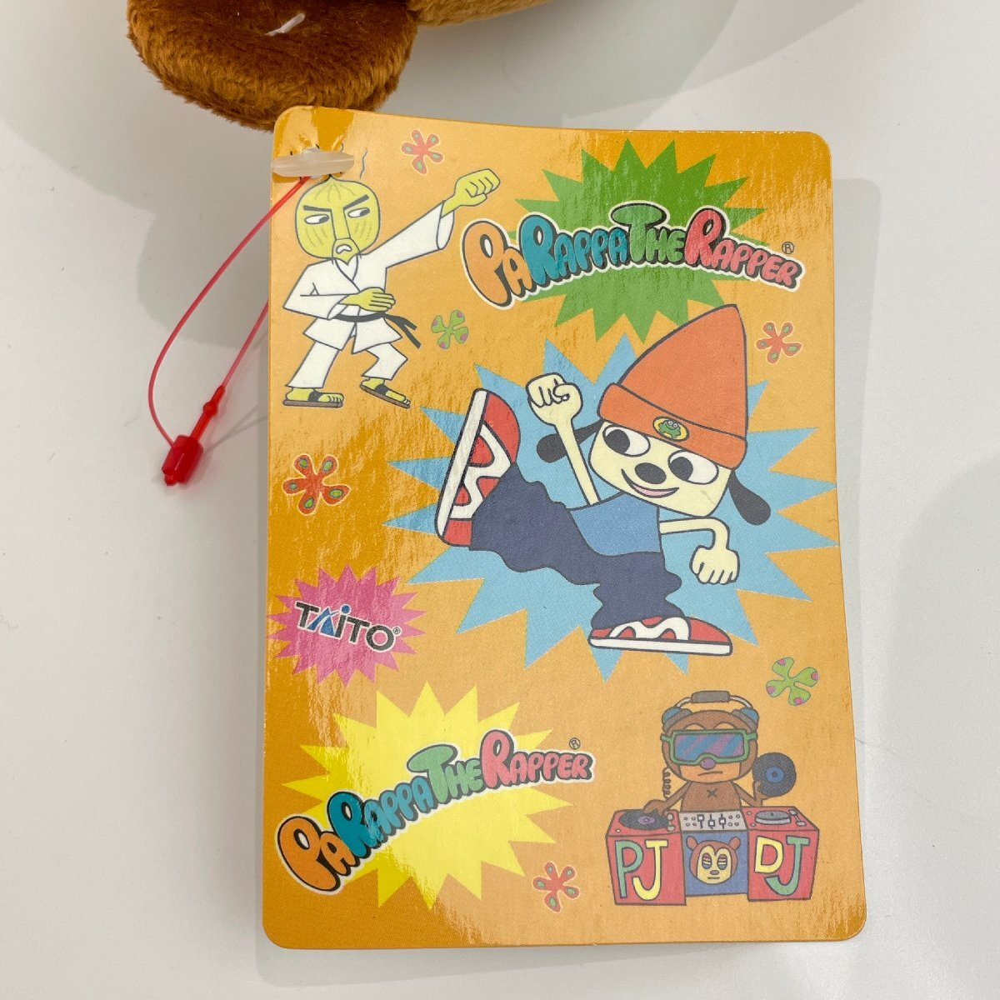
Hang-Tag (front) — orange card printed with the PaRappa The Rapper wordmark, a mid-kick PaRappa, Chop Chop Master Onion, and PJ at the decks. The pink starburst TAITO® logo at the left edge is the tell that separates this wave from the unmarked tags.下げ札（表面）— オレンジ地のカードにPaRappa The Rapperのロゴ、キックポーズのパラッパ、タマネギ先生、ターンテーブルを操るPJがプリントされている。左端のピンクの星形 TAITO® ロゴが、無表記タグのロットと見分けるポイント。
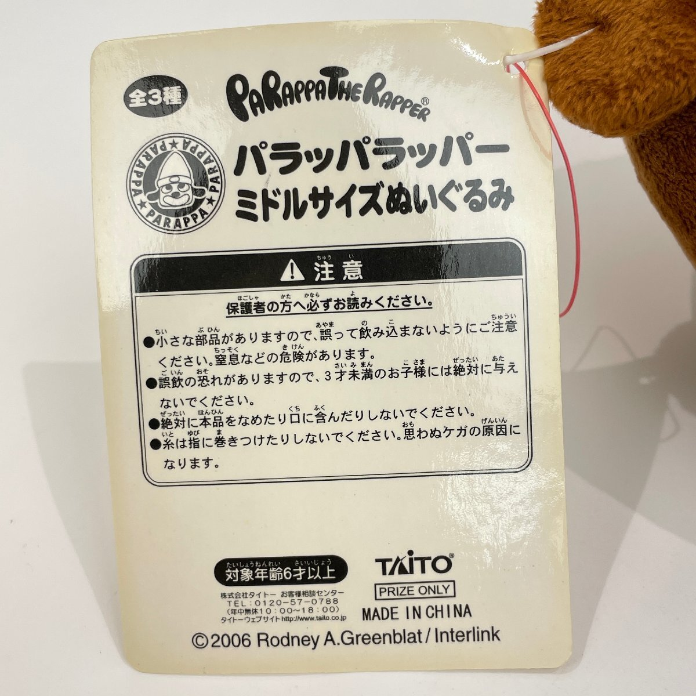
Hang-Tag (back) — Japanese spec side, naming the product 「パラッパラッパー ミドルサイズぬいぐるみ」 (PaRappa The Rapper Middle Size Plush) and marking it 全3種 ("3 types in the set"). Below the ⚠注意 safety block sit the 対象年齢 6才以上 ("ages 6+") mark, the Taito customer-service line, the TAITO / PRIZE ONLY / MADE IN CHINA stamp, and the ©2006 Rodney A. Greenblat / Interlink credit.下げ札（裏面）— 日本語のスペック面。商品名は「パラッパラッパー ミドルサイズぬいぐるみ」で、全3種と明記されている。⚠注意の安全文の下には、対象年齢6才以上の表示、タイトーお客様相談センターの連絡先、TAITO／PRIZE ONLY／MADE IN CHINAのスタンプ、そして ©2006 Rodney A. Greenblat／Interlink のクレジットが並ぶ。
— RARE JUMBO VARIATIONS —— 希少ジャンボ バリエーション —
These jumbo variations are among the rarest and most obscure PaRappa plush toys ever made.これらのジャンボ版は、パラッパのぬいぐるみの中でも最も希少で知られざるアイテムのひとつです。
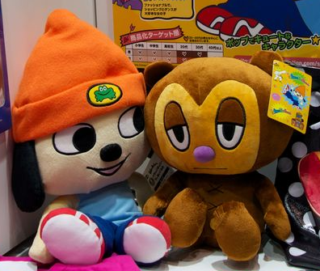
Jumbo PaRappa & PJ Berri on Display — the jumbo-size Taito PaRappa seated beside its jumbo PJ Berri counterpart, both with hang tags still attached.ジャンボ パラッパ＆PJベリー 展示 — ジャンボサイズのタイトー製パラッパが、対になるジャンボPJベリーと並んで座っている。どちらも下げ札が付いたまま。

16" PARAPPA THE RAPPER plush soft toy. This toy was PRIZE ONLY meaning it was never for sale anywhere in the world and could only be obtained by winning it in a UFO catcher game in a Japanese arcade.16インチ「パラッパラッパー」ぬいぐるみ。本品はPRIZE ONLY（景品専用）仕様で、世界中どこでも一般販売されたことはなく、日本のアーケードのUFOキャッチャーで獲得することでのみ入手可能だった個体。


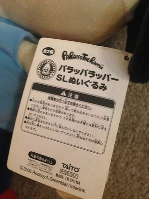
SL Plush Hang-Tag (back) — reverse of the same Taito tag, in Japanese: 「パラッパラッパー SLぬいぐるみ」 product name, the ⚠注意 (warning) safety paragraph, the 対象年齢 3歳以上 ("ages 3+") mark, the © 2006 Rodney A. Greenblat / Interlink credit, and the TAITO / MADE IN CHINA distribution stamp. Confirms the larger figure as the 2006 Taito SL release.SLぬいぐるみ下げ札（裏面）— 同じタイトータグの裏側、日本語表記。商品名「パラッパラッパー SLぬいぐるみ」、⚠注意の安全文、対象年齢3歳以上の表示、「© 2006 Rodney A. Greenblat／Interlink」のクレジット、そしてTAITO／MADE IN CHINAの流通スタンプが並ぶ。大型版が2006年タイトーSL版であることを裏付ける資料。
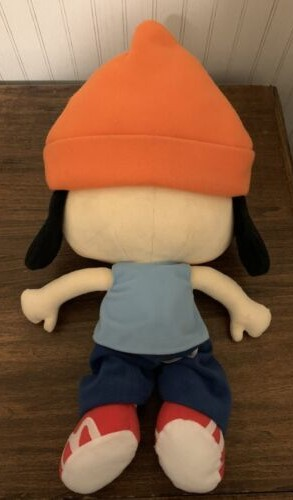
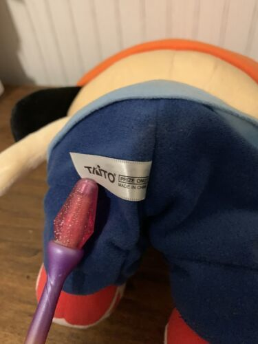
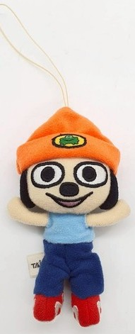
Mini PaRappa Keychain Plush (Taito) — small palm-sized PaRappa mascot prize with a hang string. The most obscure PaRappa plush release from Taito. Unsure of how this was distributed. Most likely UFO machine or prize capsule. Japan/Europe most likely.ミニ パラッパ キーチェーンぬいぐるみ（タイトー）— 吊り下げ用のひも付き、手のひらサイズの小型パラッパマスコット景品。タイトーのパラッパぬいぐるみの中で最も知られざるアイテム。配布方法は不明で、UFOキャッチャーかカプセル景品だった可能性が高い。日本またはヨーロッパで展開されたと思われる。
— CREAMTOYZ PARAPPA —— CREAMTOYZ パラッパ —

CREAMTOYZ PaRappa — A companion piece to the CREAMTOYZ Lammy, this PaRappa plush was built on the early PaRappa plush design, with the face parts and the frog beanie emblem re-rendered as embroidery. Rather than overseas factory mass-production, each one was hand-made individually by the Japanese atelier CREAMTOYZ. Shown here in the official CREAMTOYZ promotional layout: PaRappa in his orange frog-crest beanie, blue tee with a red RodneyFun side tag, denim shorts, and red-and-white sneakers, with floppy black ears. It measures roughly 210 mm tall × 150 mm wide × 50 mm deep and is made of polyester (body and stuffing).CREAMTOYZ パラッパ— CREAMTOYZ ラミーの対となる一体で、初期のパラッパぬいぐるみのデザインをベースに、顔のパーツとカエルのビーニーのワッペン部分を刺繍で表現しています。海外工場での大量生産ではなく、日本の工房 CREAMTOYZ が一体ずつ手作りしました。ここでは公式の CREAMTOYZ 販促レイアウトで撮影されており、カエルマーク付きのオレンジビーニー、赤い RodneyFun のサイドタグが付いた青いTシャツ、デニムショートパンツ、赤白のスニーカー、垂れた黒い耳が見えます。サイズは約 高さ210mm × 幅150mm × 厚み50mm、素材はポリエステル（本体・中綿）。